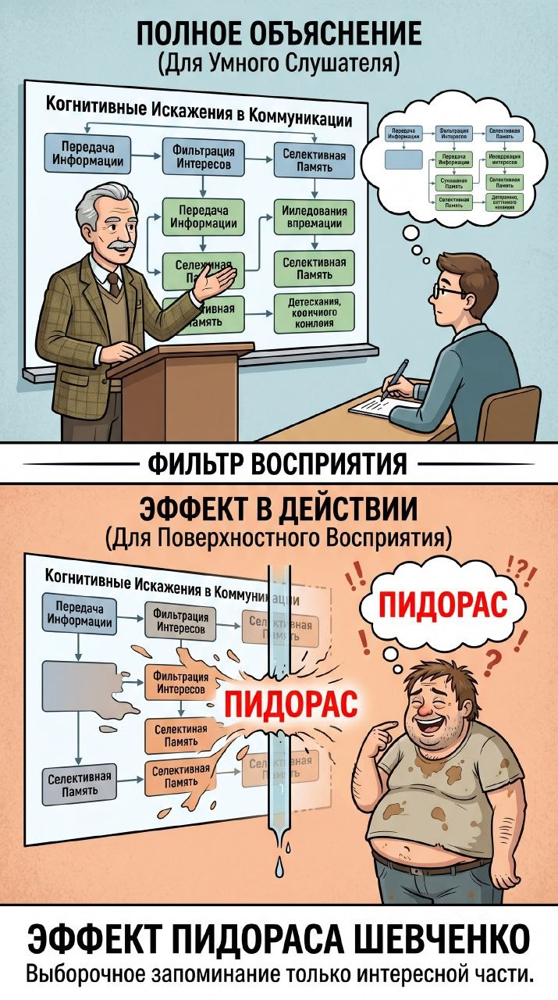
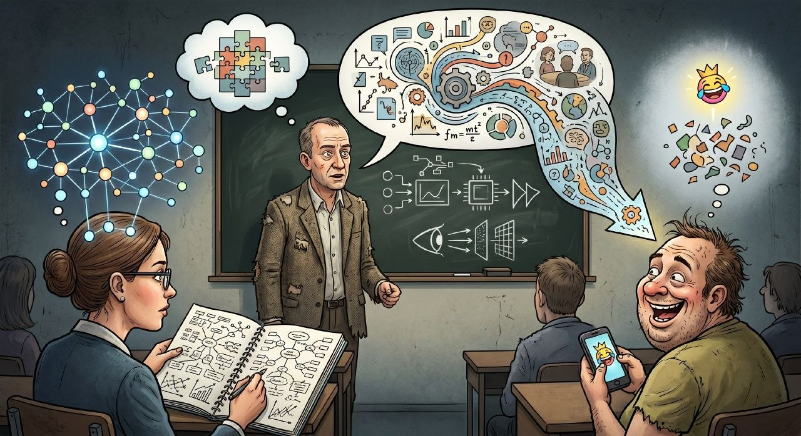

Если человек умный, то он возьмет все и сделает свой вывод, а если человек тупое недоразвитие жирное вонючее благоуханно мутировавшие из плесени и фенилкетонурного наследства имбецил, то он выявит лишь малую часть, в которой есть что то смешное и сложит в одно тупое творение.
Эффект Пидораса Шевченко - это эффект, суть которого кроется в названии. Большинство из вас, прочитав этот эффект, посмеялись со слова Пидорас, и запомнили его - эти люди мыслят больше о том, что их интересует, при этом не улавливая всей сути. Эффект гласит, что чтобы ты не разъяснял человек запомнит лишь часть, которая ему интересна
Далеко-далеко за словесными горами в стране гласных и согласных живут рыбные тексты. Имеет дорогу раз власти рыбными!